Computer Vision
Detekcja obiektów modelami YOLO, porównywanie architektur CNN i backbone'ów oraz uczenie na niezbalansowanych danych. Zastosowane do morskich flag sygnałowych w moim doktoracie.
Jestem inżynierem AI i badaczem computer vision na Uniwersytecie Morskim w Gdyni. Specjalizuję się we wdrażaniu agentów sztucznej inteligencji (Generative AI, Agentic AI). W doktoracie zajmuję się detekcją flag Międzynarodowego Kodu Sygnałowego, z trzema recenzowanymi publikacjami. Wcześniej tworzyłem oprogramowanie graficzne w Intelu i AMD, a w projekcie ATLAS buduję agentów opartych na modelach językowych.

Trzy obszary, w których pracowałem i pracuję. Każdy wyrósł z poprzedniego.
Detekcja obiektów modelami YOLO, porównywanie architektur CNN i backbone'ów oraz uczenie na niezbalansowanych danych. Zastosowane do morskich flag sygnałowych w moim doktoracie.
Lokalne modele językowe przez Ollamę, RAG, agenci w LangGraph i ewaluacja odpowiedzi. Rozwijane krok po kroku w projekcie ATLAS.
Oprogramowanie graficzne w DirectX w Intelu, C/C++ w AMD oraz własne silniki w OpenGL i Direct3D 12. Stąd wiem, jak oprogramowanie naprawdę działa na sprzęcie.
Seria projektów realizujących działające systemy AI: modele językowe, RAG, agentów, systemy wieloagentowe i modele multimodalne. Każdy działa lokalnie i ma testy, diagramy oraz dokumentację.
Kod każdego projektu jest na GitHubie.
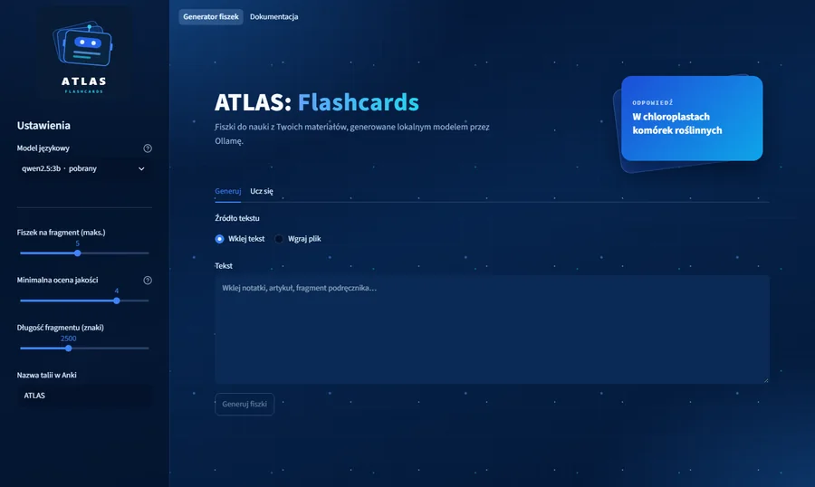
Zamienia notatki, PDF-y i dokumenty Word w fiszki do nauki, generowane lokalnym modelem Qwen 2.5 przez Ollamę. Ten sam model ocenia każdą fiszkę (LLM-as-judge), a przycisk Wyjaśnij tłumaczy ją na podstawie fragmentów materiału (RAG). Gotowe talie trafiają do Anki.
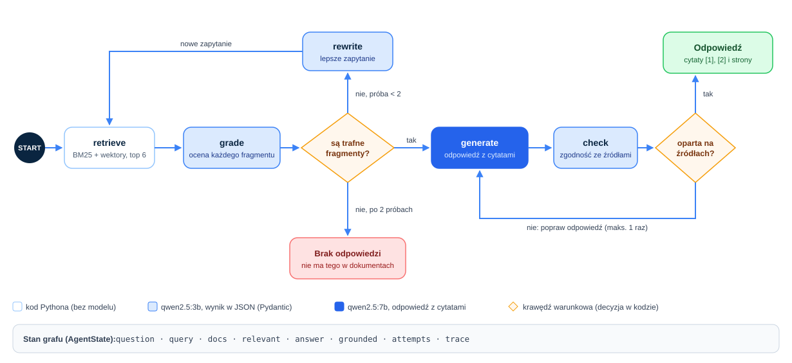
Agentowy RAG po publikacjach w PDF. Agent w LangGraph wyszukuje fragmenty hybrydowo (BM25 i wektory w Qdrant, łączone metodą RRF), ocenia, czy wystarczą, w razie potrzeby przepisuje pytanie i szuka ponownie, a odpowiada z cytatami i numerem strony albo wprost mówi, że odpowiedzi w dokumentach nie ma. Ewaluacja RAGAS względem zwykłego RAG.
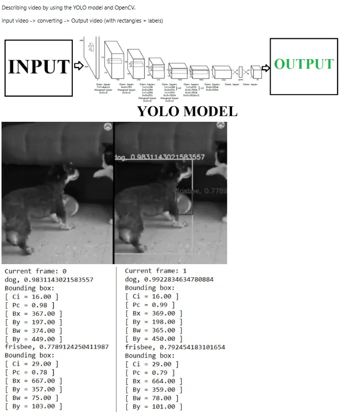
Przepuszcza film klatka po klatce przez detektor YOLO i zapisuje nowe wideo z ramkami, etykietami i pewnością każdego wykrycia. Dla każdej klatki wypisuje też współrzędne znalezionych obiektów.
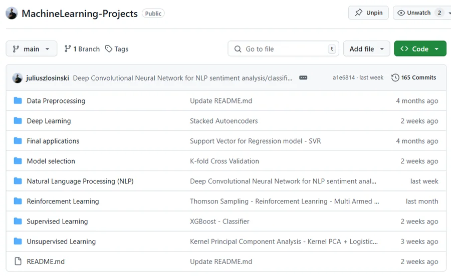
Przegląd uczenia maszynowego w notatnikach Jupyter: od NumPy i SciPy, przez uczenie nadzorowane i nienadzorowane, po sieci neuronowe w Keras i TensorFlow, NLP i uczenie ze wzmocnieniem. Na końcu gotowe aplikacje.
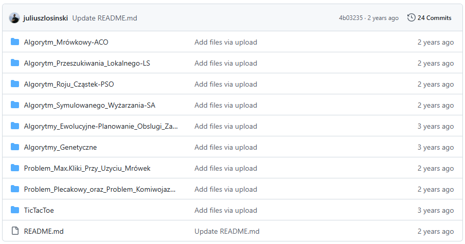
Własne implementacje algorytmów genetycznych i ewolucyjnych w Javie, bez bibliotek: kodowanie osobników, selekcja, krzyżowanie i mutacja, z wykresami przebiegu optymalizacji.
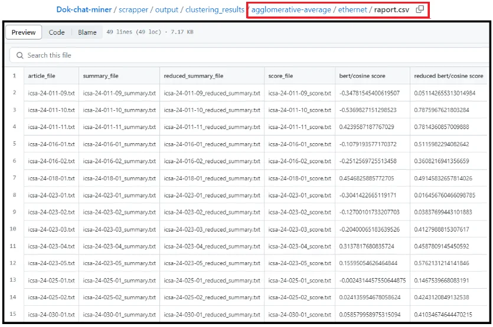
Model, który ocenia streszczenie bez streszczenia wzorcowego: artykuł i streszczenie są kodowane BERT-em, a sieć neuronowa wyuczona na ludzkich ocenach 2 500 streszczeń (CNN/DailyMail) zwraca wynik jakości. Część projektu Dok-chat-miner, który grupuje i streszcza artykuły z cisa.gov.
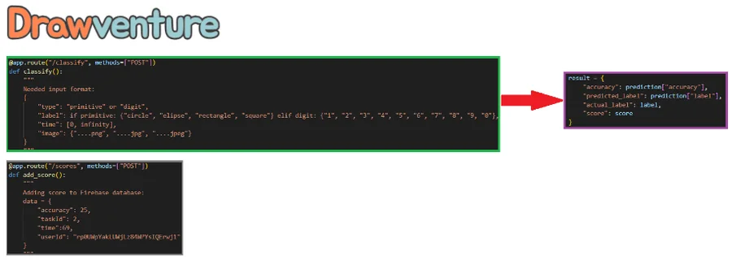
Zespołowa gra dla dzieci, w której trzeba jak najszybciej i najdokładniej narysować zadany kształt. Odpowiadałem za backend AI: sieć CNN rozpoznaje figury i cyfry, a API we Flasku ocenia każdy rysunek.
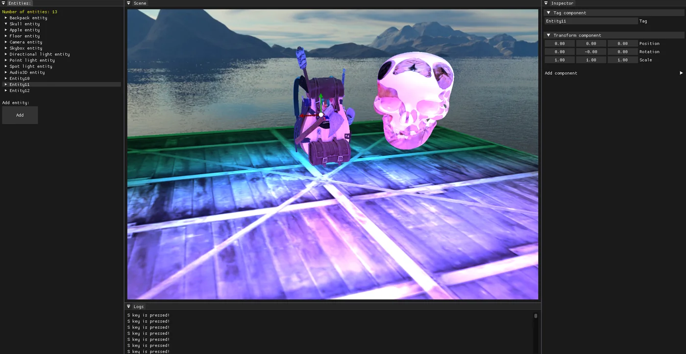
Silnik gier 3D z edytorem sceny, zbudowany w ramach pracy inżynierskiej. Renderowanie w OpenGL, fizyka i kolizje w PhysX, dźwięk w irrKlang, a interfejs edytora w ImGui. Całość napisana w C++.
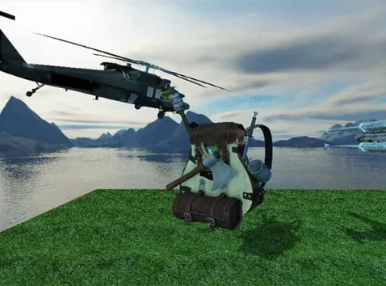
Silnik gier na nowoczesnym OpenGL (GLFW, GLEW, GLM) z własnymi shaderami GLSL oraz symulacją fizyki i kolizji w PhysX.
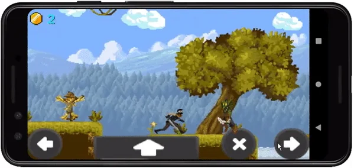
Gra platformowa 2D na Androida napisana w LibGDX. W repozytorium jest gotowa aplikacja do zainstalowania i nagrania z rozgrywki.
Doktorat na Uniwersytecie Morskim w Gdyni: system computer vision rozpoznający flagi Międzynarodowego Kodu Sygnałowego (INTERCO). Cały framework eksperymentów zbudowałem w Pythonie i PyTorch, od przygotowania i balansowania danych po trening, strojenie i automatyczną ocenę modeli.
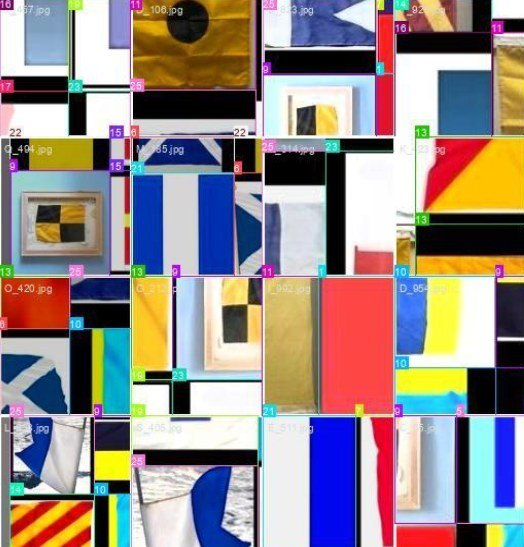
AlexNet, VGG, Inception, ResNet, CSPNet, MobileNetV2, EfficientNet i ConvNeXt porównane pod względem accuracy, precision, recall, F1, głębokości oraz czasu treningu i wnioskowania.
Sześć metod balansowania klas mniejszościowych (SMOTE, ADASYN, augmentacja, DCGAN, autoenkoder i wariant bazowy), każda z YOLOv8, v9, v10 i v11, oceniane mAP50 i mAP50-95.
Zastąpienie backbone'u YOLOv8 wybranymi architekturami CNN, by uzyskać wydajniejszy detektor flag.
J. Łosiński, I. Czarnowski · Procedia Computer Science
J. Łosiński, I. Czarnowski · Lecture Notes in Computer Science (LNAI 16139), Springer, s. 480-494
J. Łosiński, I. Czarnowski · Procedia Computer Science, vol. 270, s. 861-870
Do tego streszczenia na konferencjach PP-RAI 2024 i PP-RAI 2025 (Polska Konferencja Sztucznej Inteligencji).
Ukończone kursy i specjalizacje online. Każdy tytuł otwiera certyfikat.
Uniwersytet Morski w Gdyni · Wydział Informatyki, Katedra Sztucznej Inteligencji
Politechnika Gdańska · Centrum Informatyczne TASK
Uniwersytet Morski w Gdyni · Wydział Informatyki
Uniwersytet Morski w Gdyni
GEMMI
Intel
AMD ODC · Luxoft
Uniwersytet Morski w Gdyni
Uniwersytet Morski w Gdyni · Analiza i przetwarzanie danych
Uniwersytet Morski w Gdyni · Aplikacje internetowe i mobilne
Uniwersytet Morski w Gdyni · Wydział Informatyki · NAVOICA
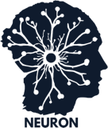
Założyciel i opiekunJestem otwarty na projekty i role związane z computer vision, modelami językowymi i agentami AI.